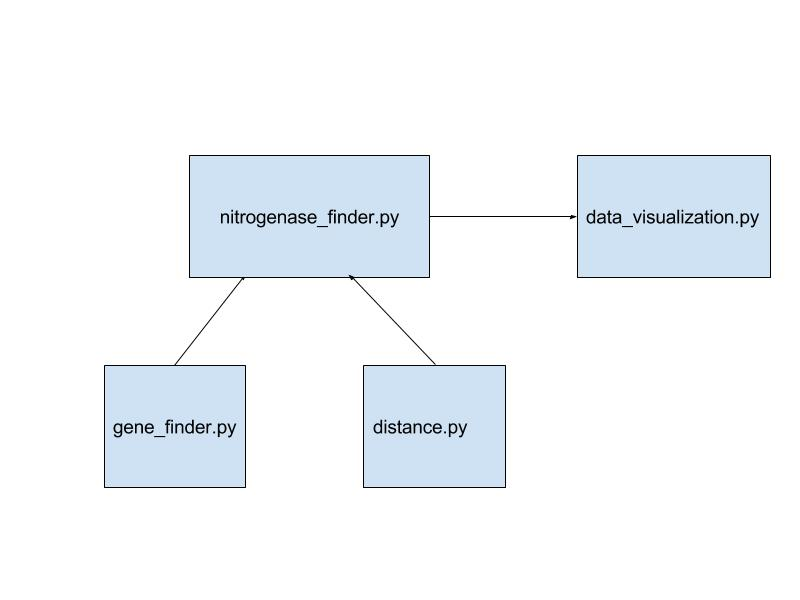

Big Idea/Goal/What is this?/Why did we do this?
Nitrogenase Finder is a genetics tool designed to help find nitrogenase genes within a metagenome; both the gene and metagenome should be in FASTA format. This project was originally born out of a suggestion by Jean Huang, a microbial biology professor at Olin College. We pursued this so that we could learn about the internal functions of the tools such as BLAST and Genius that we used for bioinformatics analysis.
Background Information
Getting Started
- Clone this branch
- Run
nitrogenase_finder.py - Run
visualization.py - If you would like to:
- run this code for metagenomes other than those provided by Jean Huang, edit the load_metagenome function in
load.py# - run this code to look for genes other than nitrogenase, edit the load_nitrogenase function in
load.pyto take in a .txt file that contains the proper gene sequence.#
#if the format for the nitrogenase and/or metagenome is different than what we have, either change the code to match your formatting or change your formatting
For more information, take a look at our README!
Project evolution/narrative
We started with a gene finder code from earlier this semester that was a gene finding Python program that accurately determined regions of the Salmonella bacterium's DNA that code for proteins. Building off functions in that code, we were able to look through bits of DNA for a nitrogen fixing gene. From there, we were able to implement a levenshtein algorithm that could account for the genes that don't exactly match for the nifH nitrogenase but still fix nitrogen. Our nitrogenase finder code was then able to pass important information such as the start and end index of the gene in the open reading frame, the length of the gene, percentage match with nitrogenase, as well as a whether or not the open reading frame is a reverse complement. This information could then be dumped into a pickle file to be accessed by our data visualization program.
Implementation information
This code takes a list of contigs that are gathered from a microbial community and looks for genes that can fix nitrogen. Since a gene that fixes nitrogen doesn't have to be an exact match for the nitrogenase sequence, we are using a levenshtein algorithm that finds a percent match for nitrogenase and passes it and other information of every gene that has a possibility of being nitrogenase into a pickle file that is then read by our data visualization code to produce a visualization for that gene.
Next Steps
As of right now, it can take at least 6 hours to finish running for an entire list of contigs from a microbial community. Even when we use PyPy, it takes about 15 minutes to produce results for one contig. Most of this time is spent searching in strings. Thus, we may implement a variation of the Boyer-Moore algorithm in the future for string matching in less time.